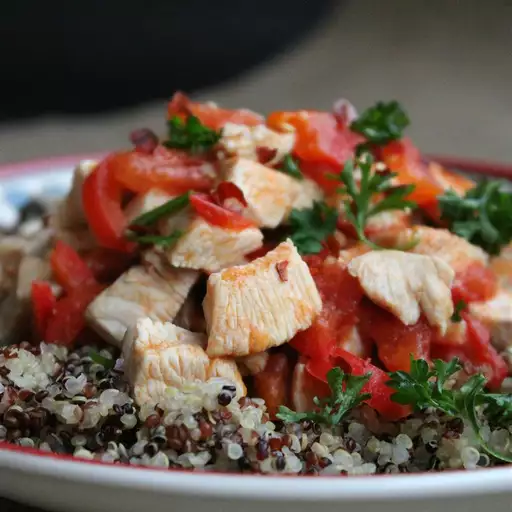

This is one of the delicious and easiest chicken dishes I have ever made. You can increase or decrease the chile peppers according to your taste.
Heat oil in a large skillet over medium heat. Add chile peppers; cook and stir until browned, about 1 minute. Add tomatoes; cook and stir until softened and reduced, about 7 minutes. Stir in chicken; cook and stir until it is dark red and sauce thickens and starts to stick to the pan, 10 to 15 minutes.